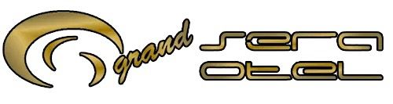

Kurumsal Hizmetlerimiz
Profesyonel Çözümler, Kurumsal Güvenceyle
- SVD Temizlik olarak yalnızca bireysel değil, kurumsal temizlik hizmetlerinde de uzmanız. Ofisler, kafeler, restaurantlar, araç filoları, kamu kurumları ve daha fazlasına yönelik yerinde temizlik çözümleri sunuyoruz.
- Çalıştığımız her kurumun ihtiyaçlarına özel sistemler geliştiriyor; planlı, disiplinli ve garantili temizlik hizmeti sağlıyoruz.
- Aşağıda iş birliği yaptığımız değerli markalardan ve gerçekleştirdiğimiz projelerden bazı kareleri bulabilirsiniz. Siz de profesyonel bir temizlik ortağı arıyorsanız, bize ulaşın.


